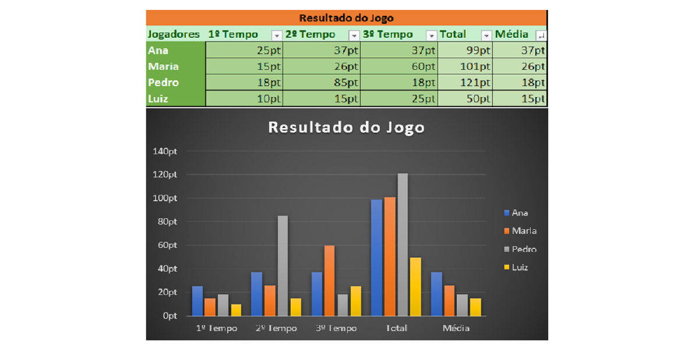

Antes de começarmos a trabalhar com matemática no Excel, vamos fazer um pequeno exercício prático para fixar tudo o que aprendemos até agora.
Para este exercício, observe a tabela e o gráfico abaixo:
Siga as etapas abaixo para criar a tabela conforme mostrado acima:
1. Abra o Excel, crie um novo arquivo e salve em sua pasta.
2. Insira os dados na tabela sem nenhuma formatação.
Detalhe: Não insira pt ao final das pontuações, criaremos um estilo de número especial para pontuação.
Também não insira os dados nas colunas Total e Média.
1. Insira o título da tabela na célula acima da célula que contém “Média”.
2. Selecione as células com os títulos das colunas (exceto “Jogadores”) e aplique um filtro (veja na tabela acima quais células possuem filtro).
3. Selecione a célula E3 (primeira célula da série “Total”) e digite:
=SOMA(B3:D3).
Essa fórmula calculará o total automaticamente.
4. Clique na alça de repetição no canto inferior direito da célula e arraste para baixo até o fim da tabela. Assim você inserirá todos os totais automaticamente.
5. Selecione a célula F3 (primeira célula da série “Média”) e digite:
=MED(B3:D3).
Essa fórmula calculará a média automaticamente.
6. Clique na alça de repetição no canto inferior direito da célula e arraste para baixo até o fim da tabela para inserir todas as médias.
7. Clique num dos valores da tabela e clique no menu Inserir.
8. Em Gráficos, selecione Gráficos de Barras ou Colunas e clique em Mais Gráficos de Colunas.
9. Selecione: Todos os Gráficos → Colunas → Coluna Agrupada → E escolha a segunda opção.
10. Altere o estilo do gráfico como desejar.
11. Posicione o gráfico melhor na planilha.
12. Mescle as células do título da tabela.
13. Aplique um filtro e formate a tabela.
Se tiver dificuldade com este exercício peça ajuda ao seu instrutor.